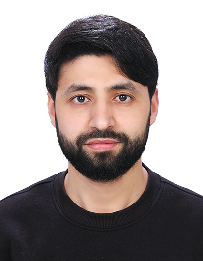

PhD Research Student – Artificial Intelligence in Healthcare
Inje University, Gimhae, South Korea
📧 Shigriyaseen@gmail.com
🔗 ORCID:
0009-0004-2383-796X
I am a PhD research student working in the field of Artificial Intelligence for Healthcare. My research focuses on developing deep learning and computer vision methods for medical image analysis and clinical decision support systems.